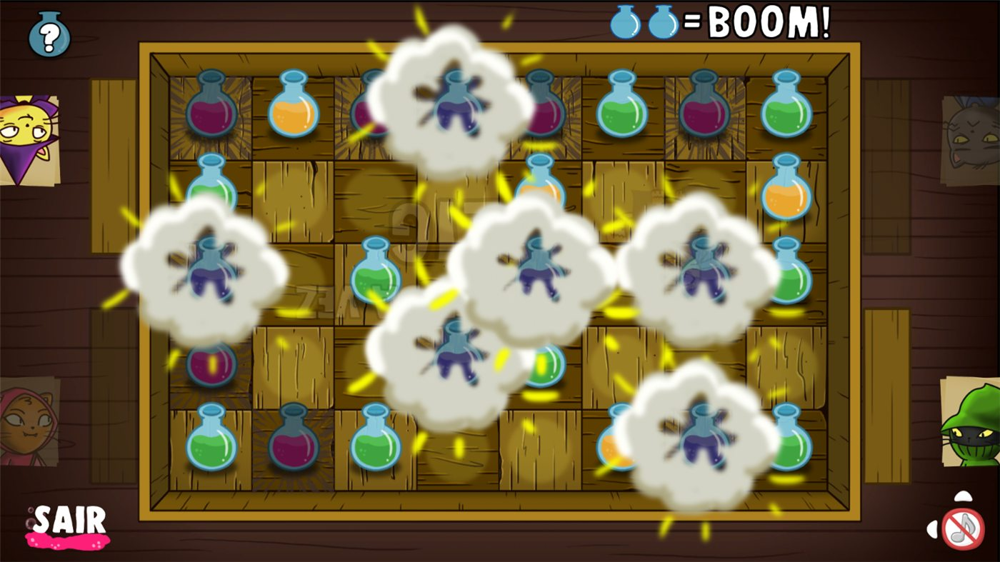
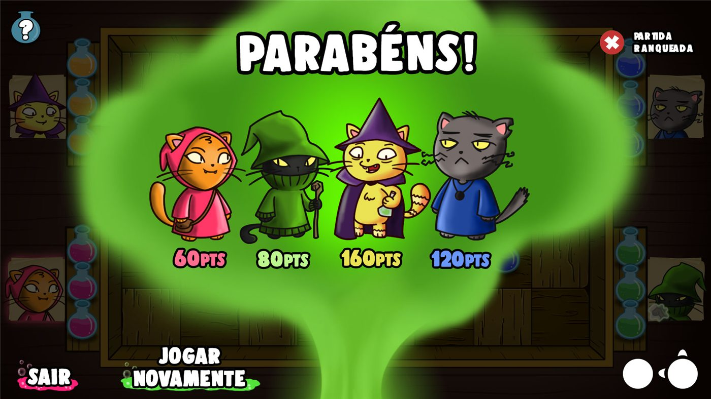
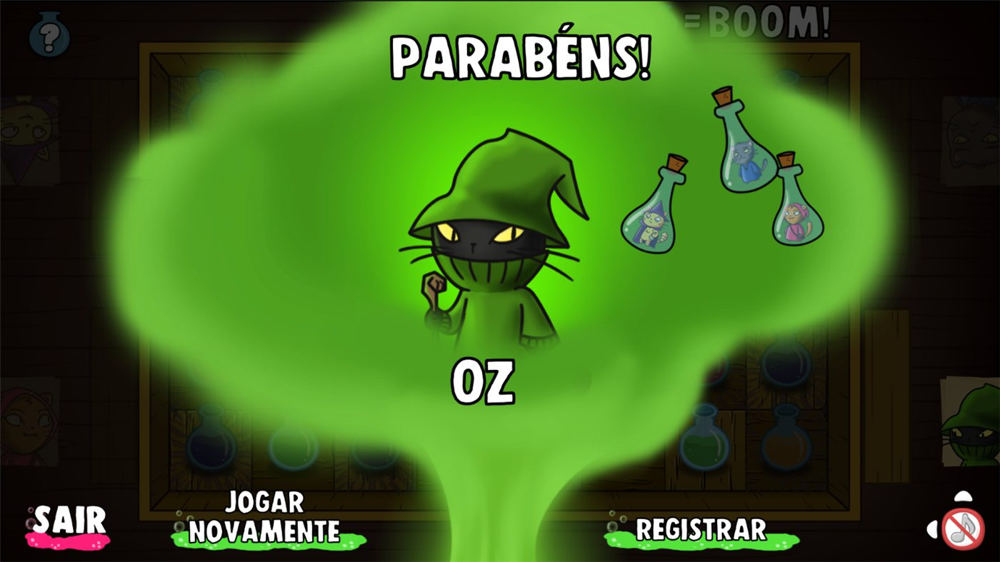

Lab Boom is a checkers-inspired board game for ages 7 and up, on the PlayTable, Playmove's interactive table. Up to four of a witch's helper cats place magic potions on the board, and whoever ends up with two potions of their color on adjacent squares is eliminated. The same rule drives five game modes, each one exercising a different skill: reasoning, memory, adapting to luck and teamwork.
I joined Lab Boom in the production phase, taking over from the game designer who created the concept. My role was to carry the original idea through to a finished game. The game is still available today.
The base rule is simple: on each turn, a player places a potion on the board, and anyone who ends up with two potions of their color on adjacent squares is eliminated. The last one standing wins. The five modes vary this rule:
A game that reuses its main mechanics in different modes gains versatility. With the same base rule, each mode changes one element, such as information, chance, risk or the goal, and offers a different experience. That creates more engagement, because the player has new ways to play without learning a new game; it makes better use of the work already done on the core mechanic; and it can win over more types of players: those who enjoy pure reasoning, those who like a memory challenge, those who accept a pinch of luck and those who prefer to cooperate.
Clear feedback tells the player what happened and why. In Lab Boom, when a potion ends up next to another of the same color, the explosion effect makes it unmistakable that the player lost. Good feedback matters especially for young players: it teaches the rules through their consequences, avoids doubt about the result, and makes a defeat understandable, which keeps the player willing to try again.

Having game modes that make sense for the age group and for the type of game is important. A game for players aged 7 and up, played around a shared table, needs modes that fit that audience: a cooperative mode, where the group wins or loses together, suits the social nature of the table and leaves room for players who do not enjoy direct competition, while a competitive mode with a single winner serves those who want a challenge. Each mode also needs a result screen that celebrates what happened in that mode, which reinforces its identity and the sense of achievement.


The main challenge of the game was getting several modes out of a single mechanic. The solution was to keep the base rule fixed and vary one element at a time: information, with colors hidden in Blackout; chance, with the die in Chaos Die; risk and choice, with the cards in Pass by Pass; and the goal itself, with cooperation in All for All. Players learn one rule and then find in each mode a different skill to exercise, from logic to memory to teamwork.
In this game balancing has nothing to do with an economy: the levers are the dice, the size of the board and the cards. They control how quickly the board fills up and how likely it is for someone to be eliminated, so each mode needed its own calibration. In the cooperative mode, where the goal is to survive five rounds, these same levers directly define how hard it is to win.
Joining a project with the concept already defined meant respecting the original idea while making sure it worked in practice. This is where playtests did their part: they showed what needed to change, and the modifications were applied on top of the existing concept.
With modes that share a base rule and differ in a single detail, the tutorials and feedback had to make clear what changes in each one, and the machine opponent had to know how to play every mode. Both were designed so that the rule learned in one mode carried over to the next.
Lab Boom was a successful game, especially in the entertainment segment. It remains available on the PlayTable today.
In this game, one rule became five ways to play.